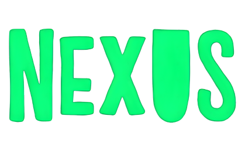

A comunicação centralizada em um só lugar.
A Nexus é uma rede social especialmente desenvolvida para melhorar a comunicação interna dentro das instituições educacionais.
Pensada para conectar professores, alunos, coordenadores e toda a equipe administrativa, a plataforma oferece um ambiente digital colaborativo e seguro, facilitando o compartilhamento de informações, projetos e novidades.
Com a Nexus, as instituições conseguem integrar seus membros de maneira eficiente, promovendo um fluxo de comunicação ágil e organizado. A plataforma permite a criação de grupos temáticos, fóruns de discussão, envio de avisos importantes e troca de arquivos, tudo pensado para fortalecer o engajamento e a colaboração no ambiente escolar.
Além disso, a Nexus contribui para o desenvolvimento de uma cultura institucional mais coesa, onde cada participante tem voz ativa e acesso rápido às informações necessárias para o dia a dia acadêmico e administrativo. Ao centralizar a comunicação, a plataforma minimiza ruídos e evita a dispersão de dados importantes, garantindo que todos estejam alinhados aos objetivos educacionais da instituição.